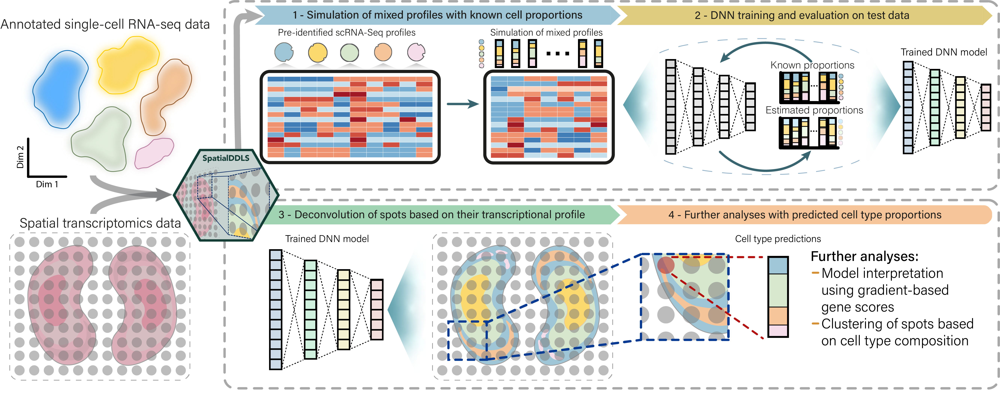

An R package to deconvolute spatial transcriptomics data using single-cell RNA-seq and deep neural networks
The SpatialDDLS R package provides a neural network-based solution for cell type deconvolution of spatial transcriptomics data. The package takes advantage of single-cell RNA sequencing (scRNA-seq) data to simulate mixed transcriptional profiles with known cell composition and train fully-connected neural networks to predict cell type composition of spatial transcriptomics spots. The resulting trained models can be applied to new spatial transcriptomics data to predict cell type proportions, allowing for more accurate cell type identification and characterization of spatially-resolved transcriptomic data. Overall, SpatialDDLS is a powerful tool for cell type deconvolution in spatial transcriptomics data, providing a reliable, fast and flexible solution for researchers in the field.
For more details about the algorithm and functionalities implemented in this package, see https://diegommcc.github.io/SpatialDDLS/.

Installation
SpatialDDLS is already available on CRAN:
install.packages("SpatialDDLS")The version under development is available on GitHub and can be installed as follows:
if (!requireNamespace("devtools", quietly = TRUE))
install.packages("devtools")
devtools::install_github("diegommcc/SpatialDDLS")The package depends on the tensorflow and keras R packages, so a working Python interpreter with the Tensorflow Python library installed is needed. The installTFpython function provides an easy way to install a conda environment named spatialddls-env with all necessary dependencies covered. We recommend installing the TensorFlow Python library in this way, although a custom installation is possible.
library("SpatialDDLS")
installTFpython(install.conda = TRUE)References
| Mañanes, D., Rivero-García, I., Jimenez-Carretero, D., Torres, M., Sancho, D., Torroja, C. and Sánchez-Cabo, F. (2023). SpatialDDLS: An R package to deconvolute spatial transcriptomics data using neural networks. bioRxiv (preprint) doi:10.1101/2023.08.31.555677 |
| Torroja, C. and Sánchez-Cabo, F. (2019). digitalDLSorter: A Deep Learning algorithm to quantify immune cell populations based on scRNA-Seq data. Frontiers in Genetics 10 978 doi:10.3389/fgene.2019.00978 |